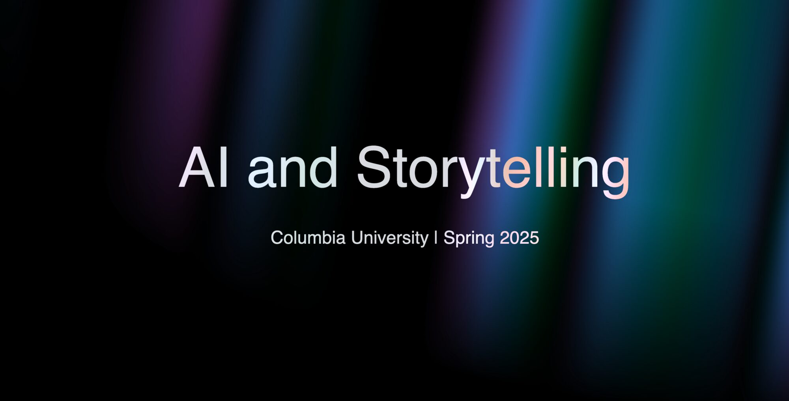

AI & Storytelling
Helped develop the curriculum for a new course exploring how Artificial Intelligence can be used to express and share human experiences in novel ways. Guided students through the hands-on exploration and technical troubleshooting of AI video generation workflows, integrating tools like Runway, Veo3, and the Replicate API to build creative pipelines.
View Course RepositoryBelow are sample videos I created for the class.
AI Visual Symphonic Poem
This video explores various works by J.M.W. Turner. It connects his turbulent marine paintings, focusing on his famous textures and colors. AI adds motion, but artistic choices are what allow the video to highlight the unique and interesting elements of Turner's work.
Depart
This project is an exploration of how generative AI can be carefully directed to tell a deeply emotional, visual narrative. By chaining together text-to-image prompts, image-to-video APIs, and Veo3, I crafted a surreal visual language to drive the story of two girls breaking free from a massive ship on a red ocean. When a sudden firework prompts one to turn back, the other is left to embark on a solitary, dreamlike journey.